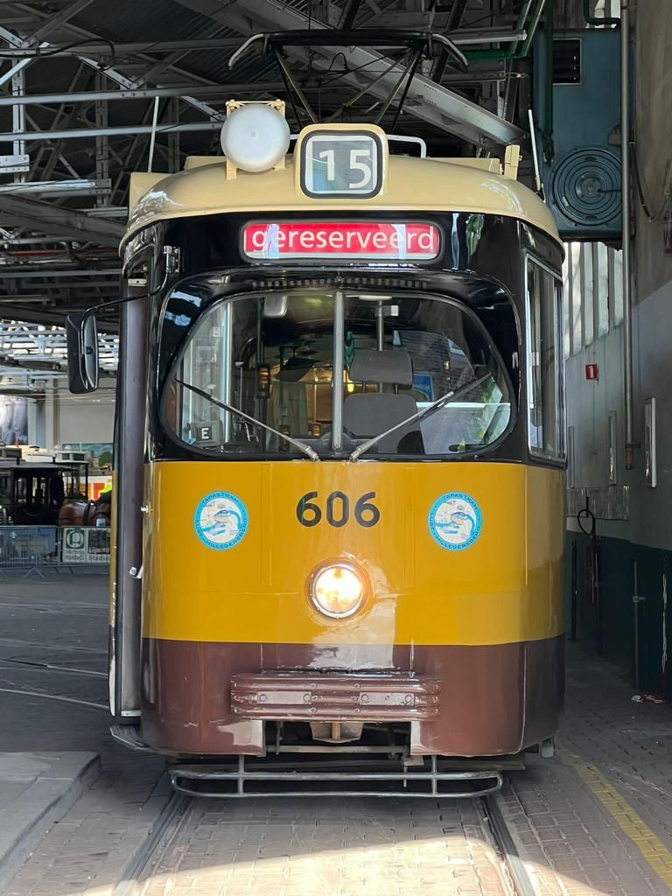
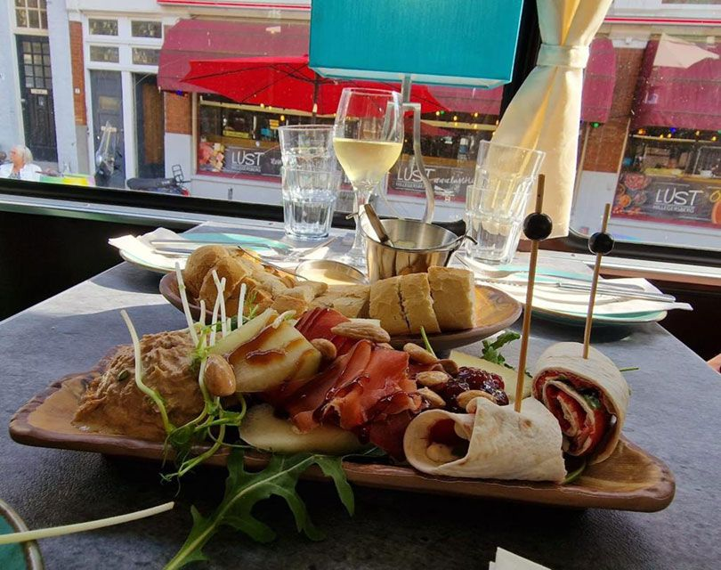
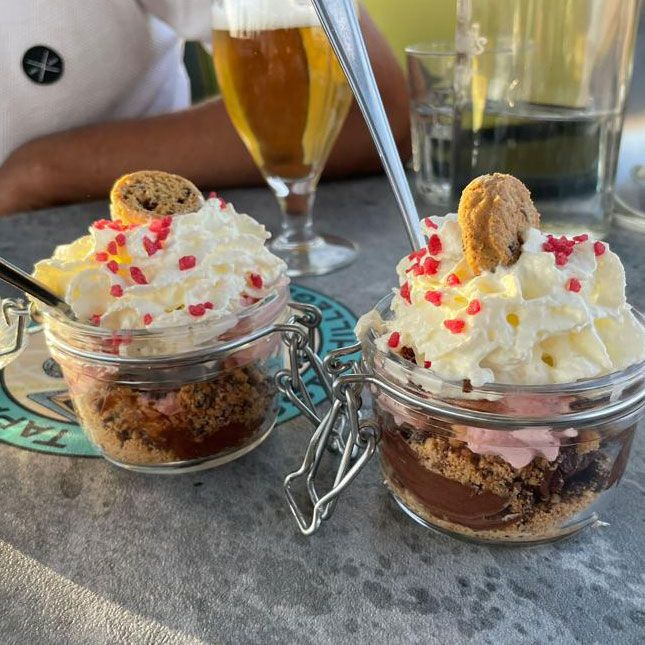
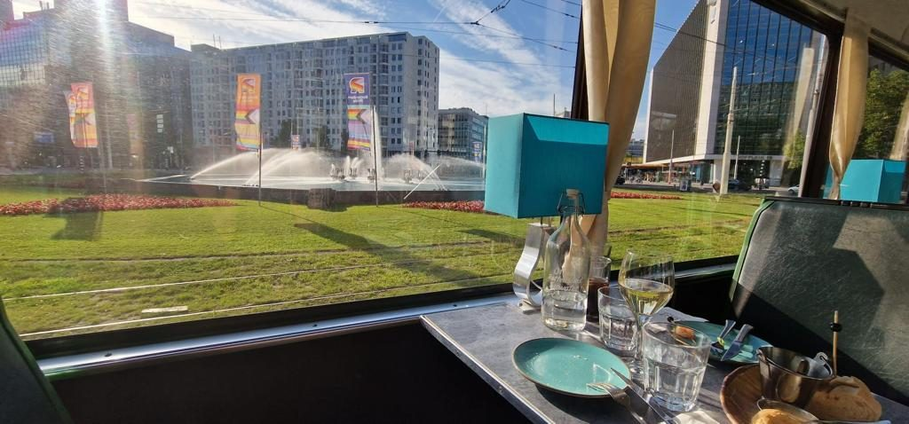

De Lust TapasTram
Elke woensdag twee uur tapas eten in een historische tram, dwars door Rotterdam. € 67 p.p.
De rit
Vanuit de historische tram rijdt u langs de mooiste plekken van de stad: het Centraal Station, de Markthal, de Euromast, de kubuswoningen, de Erasmusbrug, de Coolsingel, het oude westen en Delfshaven.
Onderweg serveren wij verschillende soorten tapas met vlees, vis en vegetarisch, bereid door de chef van Lust Hillegersberg. Daarbij wijn, bier of fris. Halverwege is er een pauze van 20 minuten om de benen te strekken.
De gele vierassers van Stichting RoMeO (Rotterdams Trammuseum) zijn een bekende verschijning in de stad.


Vertrektijden
Opstappen bij het Rotterdams Trammuseum, Kootsekade 19, in de straat van Lust. De tram moet op tijd vertrekken, dus we kunnen helaas niet op u wachten.
Reserveren
Voor de rit reserveert u vooraf via TheFork, de betaling gaat via iDEAL. De tram heeft maximaal 34 zitplaatsen.
Annuleren kan tot uiterlijk 24 uur vooraf: u kiest dan een andere datum. Geld retour is niet mogelijk.

De tram voor uw groep
Op zoek naar een uniek teamuitje, een vrijgezellenfeest of wilt u een verjaardag vieren in Rotterdam? Huur de TapasTram voor uw eigen gezelschap.
Reserveren
We raden aan vooraf te reserveren, dan bent u verzekerd van een plekje. Het makkelijkst via WhatsApp.
Lust Hillegersberg
- MaandagGesloten
- Di, wo, do, zo17:00 – 22:00
- Vr en za2 zittingen17:00 – 19:30 en 19:30 – 22:00
Tijdens feestdagen hebben we aangepaste openingstijden.